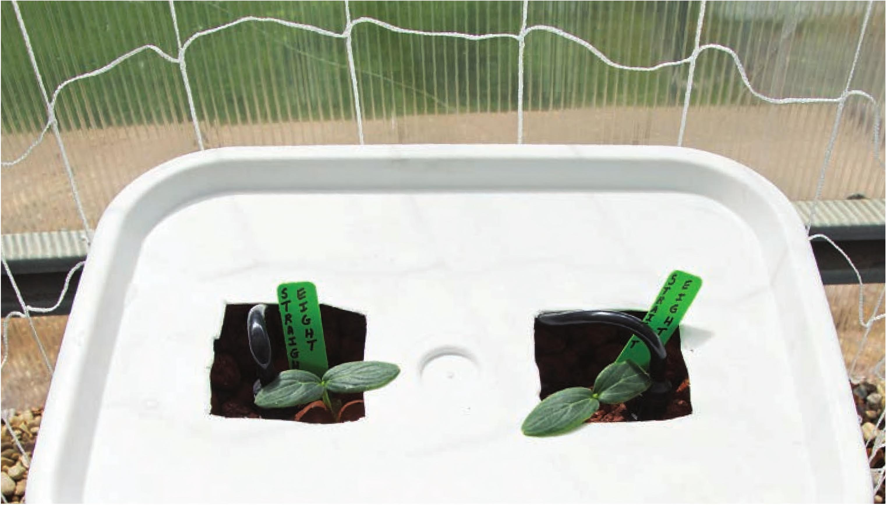

25 Place the reservoir back in place and partially fill with water. 26 Cut two 2' segments of VC black vinyl tubing. Connect these VC tubes to the VC double barbed connectors in the W black vinyl tubing. 27 Plug in the pump to test the irrigation. Check for leaks in the 3A" tube. If leaks are detected at the W double barbed connectors, replace the W tube. If leaks are detected at the end of the W tube, tighten and/or replace the zip tie. 28 In this top drip design, I used ball valves (shutoff valves) and irrigation stakes. This is not required, but it is helpful. Ball valves are great for controlling flow when connecting many buckets to one pump. The flow can be restricted at buckets near the pump to even out the flow among all the buckets. 29 Fully fill the reservoir, amend with fertilizer, and adjust the pH if needed. Attach the pump to a timer. This system has operated great with 15 minutes on and then 30 minutes off, cycling 24 hours a day. This irrigation frequency works in my specific environment, which is very sunny and hot. Indoors or in cooler environments it may be beneficial to increase the off time between irrigation cycles. This system uses clay pellets that drain very quickly, so fortunately it is difficult to overwater plants in this top drip design. When transplanting seedlings, check to see that the seedlings receive water when the pump turns on. Adjust the Va" lines and/or irrigation stakes if necessary. 90 DIY HYDROPONIC GARDENS
